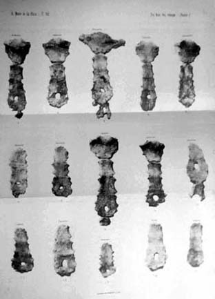

|
|  |
|
Herman Ten Kate, Sur quelques points d'ostéologie, 1896
|
While anthropologists of the late nineteenth century were measuring and classifying the bodies of colonial others as biological rather than cultural beings, archaeologists started to dig for the remains of indigenous populations of the remote past. Sometimes, as at the Brazilian Anthropological Exhibition of 1882, their 'discoveries' would be exhibited as proof of the existence of ancient civilisations, which could be claimed as spiritual ancestors at the same time as they were disassociated from the Amerindian populations of the present. In Argentina, archaeological interest in the late nineteenth century centered around the question of the 'origin of American man' –the title of a book by the naturalist Florentino Ameghino– who was supposedly among the first humans on earth. The newly conquered lands of the south were thus immediately turned into vast necropolis, the open book of a virtually 'untouched' prehistory whose final discovery and decyphering, it was suggested, testified to the triumph of Argentine civilisation.f
|